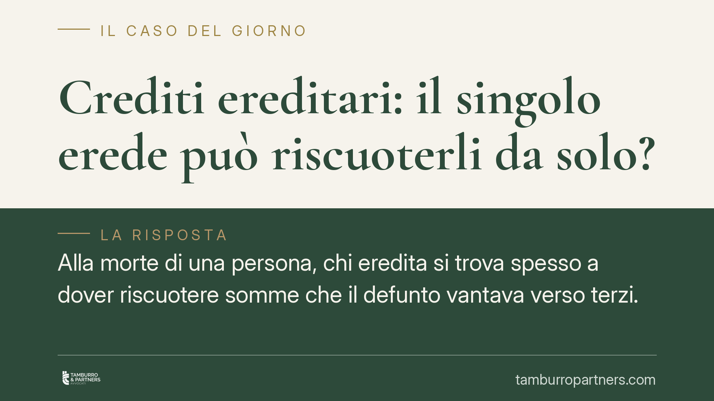

Crediti ereditari: il singolo erede può riscuoterli da solo?
Alla morte di una persona, chi eredita si trova spesso a dover riscuotere somme che il defunto vantava verso terzi. Ma un singolo coerede può incassare da solo, senza gli altri? La risposta incide sulla validità del pagamento e sulla posizione del debitore. Il punto fermo è la distinzione, decisiva, tra crediti e debiti ereditari.

Il problema: crediti e debiti non seguono la stessa regola
Quando più persone ereditano, si forma una comunione ereditaria: i beni del defunto appartengono a tutti i coeredi, ciascuno per la propria quota, fino alla divisione.
La domanda ricorrente è se un singolo erede possa muoversi da solo per riscuotere un credito del defunto, ad esempio un canone arretrato, un conto corrente o un risarcimento. La questione non è teorica: da essa dipende se il pagamento ricevuto dal debitore sia valido e liberatorio.
Il nodo è che crediti e debiti del defunto seguono discipline diverse. Confonderli porta a errori che possono costare un pagamento inefficace o una lite tra coeredi.
Inquadramento normativo: la distinzione tra debiti e crediti
Per i debiti, il codice civile è netto. L'art. 752 c.c. stabilisce che i coeredi contribuiscono al pagamento dei debiti e pesi ereditari in proporzione alle loro quote, salvo diversa disposizione del testamento. I debiti, quindi, si ripartiscono automaticamente pro quota tra gli eredi: il creditore del defunto può chiedere a ciascun erede solo la parte corrispondente alla sua quota ereditaria.
Per i crediti, la regola è diversa. Secondo l'orientamento delle Sezioni Unite della Cassazione (sent. n. 24657/2007), i crediti del defunto non si dividono automaticamente pro quota alla morte, ma ricadono nella comunione ereditaria fino alla divisione. Non vale quindi, per i crediti, l'automatismo previsto per i debiti dall'art. 752 c.c.
Questa asimmetria ha una conseguenza pratica precisa: mentre il debito si frammenta subito tra gli eredi, il credito resta un bene comune da gestire secondo le regole della comunione.
Restano fermi due riferimenti ulteriori. L'art. 757 c.c. attribuisce alla divisione efficacia dichiarativa: una volta divisa l'eredità, si considera che ciascun erede abbia ricevuto i beni (e quindi anche i crediti) assegnati fin dal momento dell'apertura della successione. L'art. 760 c.c., infine, esclude la garanzia per l'insolvenza del debitore di un credito assegnato in sede di divisione, quando l'insolvenza sopravviene dopo la divisione stessa.
Cosa significa in concreto
Poiché i crediti del defunto cadono in comunione, il singolo coerede di regola non può riscuotere da solo l'intero credito come se fosse esclusivamente suo, né può pretendere il pagamento della sola propria quota a proprio piacimento, al di fuori delle regole della comunione.
La gestione del credito comune rientra negli atti di amministrazione della comunione ereditaria: per gli atti eccedenti l'ordinaria amministrazione occorre il concorso dei coeredi secondo le rispettive quote.
Dal lato del debitore del defunto, questo significa prudenza. Il pagamento fatto a un solo coerede, senza che costui sia munito del consenso o di un mandato degli altri, rischia di non essere liberatorio verso i coeredi rimasti estranei. In pratica, il debitore che paga la persona sbagliata può trovarsi a pagare due volte.
La via ordinata è, dove possibile, la riscossione concordata tra i coeredi, oppure il conferimento di un mandato a uno di essi affinché incassi anche per conto degli altri. In alternativa, la riscossione può essere definita in sede di divisione, con l'assegnazione del credito a uno specifico erede.
Cosa fare in concreto
- Distinguete subito crediti e debiti. Per i debiti applicate l'art. 752 c.c.: ciascun erede risponde pro quota. Per i crediti considerate il regime di comunione: non date per scontato di poter incassare da soli.
- Agite in modo coordinato sui crediti. Prima di riscuotere, verificate con gli altri coeredi; se possibile, formalizzate un mandato scritto a chi incasserà per conto di tutti.
- Se siete il debitore del defunto, pretendete prova della legittimazione. Chiedete documentazione successoria e, in caso di più eredi, il consenso o il mandato degli altri prima di pagare a uno solo.
- Valutate la divisione come strumento di soluzione. L'assegnazione del credito a un erede in sede di divisione chiarisce chi è legittimato a riscuotere, tenendo presente l'efficacia dichiarativa dell'art. 757 c.c.
- Tenete conto dell'art. 760 c.c. Nell'assegnarvi un credito in divisione, considerate che non è garantita l'insolvenza del debitore sopravvenuta dopo la divisione.
La materia successoria impone verifiche caso per caso: la quota, il contenuto del testamento e la natura del singolo credito possono modificare la soluzione operativa. Consigliamo di esaminare la documentazione prima di qualsiasi atto di riscossione.
---
Contributo informativo a cura di Tamburro & Partners - Avv. Giuseppe Tamburro. Non costituisce parere legale.
Ogni famiglia ha il suo equilibrio.
Separazione, divorzio, affidamento, assegno: se vuoi un confronto riservato su una specifica situazione, scrivi allo studio. Ti rispondiamo entro un giorno lavorativo.